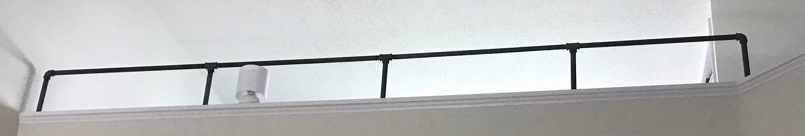

-
-
Back at the circus today after the last three stressful weeks. Looking forward to digging into some HTML
and CSS as we continue this mad schedule. Footnote: I will go mad if I have to glue myself to another
SingleVision video that's so old it's bloody useless. Meanwhile with all this creative output, I'm feeling the desire to pick up
short stories and possibly longer again. I've begun to write a little bit more as I'm preparing to lead a game as a GM.

Also, we've started to industrialize the house as well. And over the weekend I torqued a few screws as I was hand tightening them until
they broke off.
Previous Entries
-